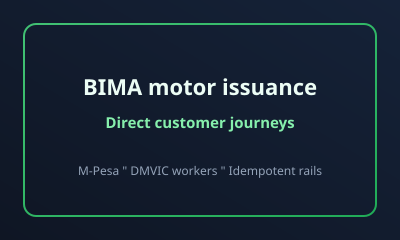

How We Built a Production Motor Insurance Flow: TPO/TOR to Certificate Issuance

Building insurance software in production is different from demo-grade fintech. Every state transition matters: acquisition input quality, payment confirmation, certificate issuance, policy payload alignment, and auditability. This post shares the architecture and execution patterns that make this reliable under real traffic.
Architecture Overview
- React front-end for guided TPO/TOR acquisition with clear vehicle and cover selection.
- Node/Express API layer with strict validation and traceable transaction states.
- PostgreSQL as source of truth for payment and issuance lifecycle state.
- Redis + BullMQ workers for asynchronous DMVIC issuance and controlled concurrency.
Why Async Issuance Matters
Certificate issuance can involve external registries with variable latency. Keeping issuance asynchronous prevents checkout from blocking and allows retries, backoff, and throttling. This gives a better customer experience while protecting upstream services.
Production Disciplines That Reduced Risk
- Database-level idempotency constraints on successful payment confirmations.
- Smoke and reconciliation workflows for deployment and post-payment validation.
- Operational dashboards around queue health, callback failures, and issuance lag.
Outcome
The key result was a system that remained fast for end users, observable for engineering, and defensible for finance, audit, and compliance teams. In regulated products, reliability is the product.